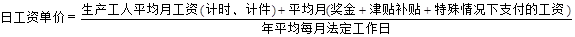
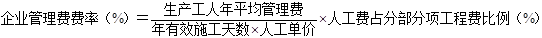
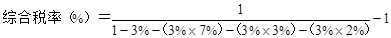
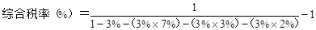
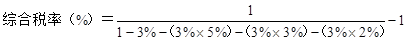
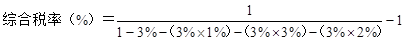

附件3：
建筑安装工程费用参考计算方法
一、各费用构成要素参考计算方法如下：
（一）人工费
公式1：
人工费=∑（工日消耗量×日工资单价）
注：公式1主要适用于施工企业投标报价时自主确定人工费，也是工程造价管理机构编制计价定额确定定额人工单价或发布人工成本信息的参考依据。
公式2：
人工费=∑（工程工日消耗量×日工资单价）
日工资单价是指施工企业平均技术熟练程度的生产工人在每工作日（国家法定工作时间内）按规定从事施工作业应得的日工资总额。
工程造价管理机构确定日工资单价应通过市场调查、根据工程项目的技术要求，参考实物工程量人工单价综合分析确定，最低日工资单价不得低于工程所在地人力资源和社会保障部门所发布的最低工资标准的：普工1.3倍、一般技工2倍、高级技工3倍。
工程计价定额不可只列一个综合工日单价，应根据工程项目技术要求和工种差别适当划分多种日人工单价，确保各分部工程人工费的合理构成。
注：公式2适用于工程造价管理机构编制计价定额时确定定额人工费，是施工企业投标报价的参考依据。
（二）材料费
1.材料费
材料费=∑（材料消耗量×材料单价）
材料单价＝[（材料原价＋运杂费）×〔1+运输损耗率(%)〕]×[1+采购保管费率(%)]
2.工程设备费
工程设备费=∑（工程设备量×工程设备单价）
工程设备单价=（设备原价+运杂费）×[1+采购保管费率（%）]
（三）施工机具使用费
1. 施工机械使用费
施工机械使用费=∑（施工机械台班消耗量×机械台班单价）
机械台班单价=台班折旧费+台班大修费+台班经常修理费+台班安拆费及场外运费+台班人工费+台班燃料动力费+台班车船税费
注：工程造价管理机构在确定计价定额中的施工机械使用费时，应根据《建筑施工机械台班费用计算规则》结合市场调查编制施工机械台班单价。施工企业可以参考工程造价管理机构发布的台班单价，自主确定施工机械使用费的报价，如租赁施工机械，公式为：施工机械使用费=∑（施工机械台班消耗量×机械台班租赁单价）
2.仪器仪表使用费
仪器仪表使用费=工程使用的仪器仪表摊销费+维修费
（四） 企业管理费费率
（1）以分部分项工程费为计算基础

（2）以人工费和机械费合计为计算基础
（3）
以人工费为计算基础
注：上述公式适用于施工企业投标报价时自主确定管理费，是工程造价管理机构编制计价定额确定企业管理费的参考依据。
工程造价管理机构在确定计价定额中企业管理费时，应以定额人工费或（定额人工费+定额机械费）作为计算基数，其费率根据历年工程造价积累的资料，辅以调查数据确定，列入分部分项工程和措施项目中。
（五）利润
1.施工企业根据企业自身需求并结合建筑市场实际自主确定，列入报价中。
2.工程造价管理机构在确定计价定额中利润时，应以定额人工费或（定额人工费+定额机械费）作为计算基数，其费率根据历年工程造价积累的资料，并结合建筑市场实际确定，以单位（单项）工程测算，利润在税前建筑安装工程费的比重可按不低于5%且不高于7%的费率计算。利润应列入分部分项工程和措施项目中。
（六） 规费
1.社会保险费和住房公积金
社会保险费和住房公积金应以定额人工费为计算基础，根据工程所在地省、自治区、直辖市或行业建设主管部门规定费率计算。
社会保险费和住房公积金=∑（工程定额人工费×社会保险费和住房公积金费率）
式中：社会保险费和住房公积金费率可以每万元发承包价的生产工人人工费和管理人员工资含量与工程所在地规定的缴纳标准综合分析取定。
2.工程排污费
工程排污费等其他应列而未列入的规费应按工程所在地环境保护等部门规定的标准缴纳，按实计取列入。
（七）税金
税金计算公式：
税金=税前造价×综合税率（%）
综合税率：
（一）纳税地点在市区的企业
 

（二）纳税地点在县城、镇的企业

（三）纳税地点不在市区、县城、镇的企业

（四）实行营业税改增值税的，按纳税地点现行税率计算。
二、建筑安装工程计价参考公式如下
（一）分部分项工程费
分部分项工程费=∑（分部分项工程量×综合单价）
式中：综合单价包括人工费、材料费、施工机具使用费、企业管理费和利润以及一定范围的风险费用（下同）。
（二）措施项目费
1.国家计量规范规定应予计量的措施项目，其计算公式为：
措施项目费=∑（措施项目工程量×综合单价）
2.国家计量规范规定不宜计量的措施项目计算方法如下
（1）安全文明施工费
安全文明施工费=计算基数×安全文明施工费费率（%）
计算基数应为定额基价（定额分部分项工程费+定额中可以计量的措施项目费）、定额人工费或（定额人工费+定额机械费），其费率由工程造价管理机构根据各专业工程的特点综合确定。
（2）夜间施工增加费
夜间施工增加费=计算基数×夜间施工增加费费率（%）
（3）二次搬运费
二次搬运费=计算基数×二次搬运费费率（%）
（4）冬雨季施工增加费
冬雨季施工增加费=计算基数×冬雨季施工增加费费率（%）
（5）已完工程及设备保护费
已完工程及设备保护费=计算基数×已完工程及设备保护费费率（%）
上述（2）～（5）项措施项目的计费基数应为定额人工费或（定额人工费+定额机械费），其费率由工程造价管理机构根据各专业工程特点和调查资料综合分析后确定。
（三）其他项目费
1.暂列金额由建设单位根据工程特点，按有关计价规定估算，施工过程中由建设单位掌握使用、扣除合同价款调整后如有余额，归建设单位。
2.计日工由建设单位和施工企业按施工过程中的签证计价。
3.总承包服务费由建设单位在招标控制价中根据总包服务范围和有关计价规定编制，施工企业投标时自主报价，施工过程中按签约合同价执行。
（四）规费和税金
建设单位和施工企业均应按照省、自治区、直辖市或行业建设主管部门发布标准计算规费和税金，不得作为竞争性费用。
三、相关问题的说明
1.各专业工程计价定额的编制及其计价程序，均按本通知实施。
2.各专业工程计价定额的使用周期原则上为5年。
3.工程造价管理机构在定额使用周期内，应及时发布人工、材料、机械台班价格信息，实行工程造价动态管理，如遇国家法律、法规、规章或相关政策变化以及建筑市场物价波动较大时，应适时调整定额人工费、定额机械费以及定额基价或规费费率，使建筑安装工程费能反映建筑市场实际。
4.建设单位在编制招标控制价时，应按照各专业工程的计量规范和计价定额以及工程造价信息编制。
5.施工企业在使用计价定额时除不可竞争费用外，其余仅作参考，由施工企业投标时自主报价。